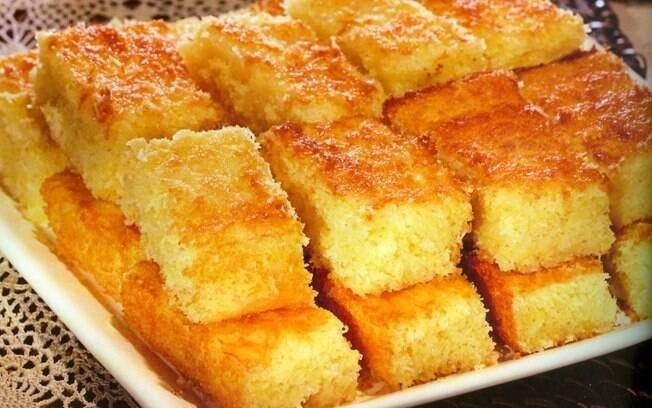

Doces · Tortas e bolos
Bolo de mandioca

Ingredientes
- 2 ¼ xícaras de mandioca ralada fino
- 2 ¼ xícaras de queijo-de-minas meia cura ralado fino
- 2 ¼ xícaras de açúcar
- 1 ¼ xícara de leite
- 1 colher (café) de canela em pó
- 1 colher (café) de cravo-da-índia em pó
- 8 ovos ligeiramente batidos
- Manteiga para untar
- Canela em pó e açúcar para polvilhar
Modo de preparo
- Preaqueça o forno em temperatura média (180 °C). Numa tigela média, coloque a mandioca e o queijo ralados, o açúcar, o leite, a canela e o cravo em pó. Misture bem.
- Junte os ovos batidos e misture até incorporar bem todos os ingredientes.
- Despeje a massa numa assadeira de 24 x 34 cm untada com manteiga e leve ao forno preaquecido até o bolo ficar dourado (45 minutos).
- Retire o bolo do forno e polvilhe fartamente com uma mistura já preparada de canela em pó e açúcar. Deixe o bolo esfriar, corte em quadrados e congele.
Observação
Os bolos, assim como os pães, biscoitos e massas em geral, congelam muito bem, pois contêm baixo teor de água. Congelamento: coloque os quadrados de bolo numa assadeira, cubra com plástico e leve ao freezer até congelarem; passe-os para um saco plástico, retire o ar e vede bem; etiquete e congele. Descongelamento: em temperatura ambiente por cerca de 1 hora.